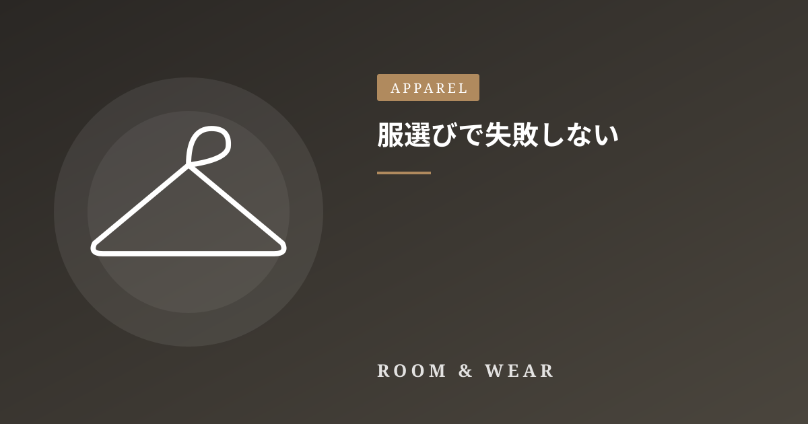
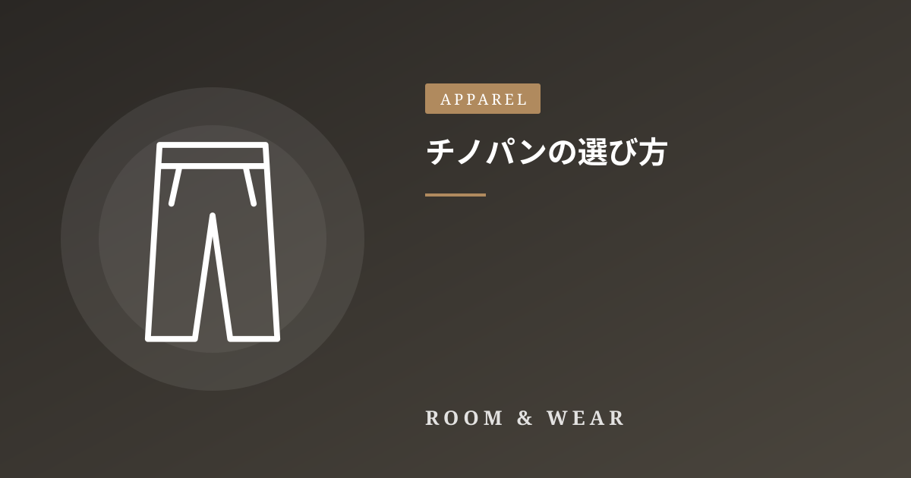

最初にそろえたい基本の服
たくさん買う前に、着回しの土台になる定番から。最初の数着を選ぶための記事をまとめました。

アパレル服選びで失敗しない。20代・30代メンズがまず揃えたい「基本の5着」
何を買えばいいか迷ったら、まずはこの5着。着回しやすく、どんな場面でも浮かない定番アイテムの選び方をまとめました。
 アパレル
アパレル白Tシャツの選び方。生地の厚さとシルエットで印象はここまで変わる
同じ白Tでも、生地の厚さ・首回り・シルエットで見え方はまったく違います。自分に合う1枚を見つけるためのチェックポイント。
 アパレル
アパレルシャツのサイズの選び方。肩・身幅・袖丈・着丈の見るべきポイント
シャツはサイズ感で印象が大きく変わるアイテム。通販でも失敗しないための、測る場所とチェックポイントを解説します。

アパレルチノパンの選び方。色・シルエット・丈で印象をコントロールする
デニムと並ぶ定番パンツ、チノパン。色とシルエットの選び方、きれいに見える丈の合わせ方を紹介します。
 アパレル
アパレルスニーカーは1足目に何を選ぶ？色・形・素材の基本
どんな服にも合わせやすいスニーカーの条件とは。色・形・素材の観点から、1足目に選びたいスニーカーのポイントをまとめました。
 アパレル
アパレル冬の機能性インナーの選び方。厚さ・首元・袖丈で選ぶ
冬の寒さ対策に欠かせない機能性インナー。シーンに合った厚さと、外から見えないための首元・袖丈の選び方を紹介します。